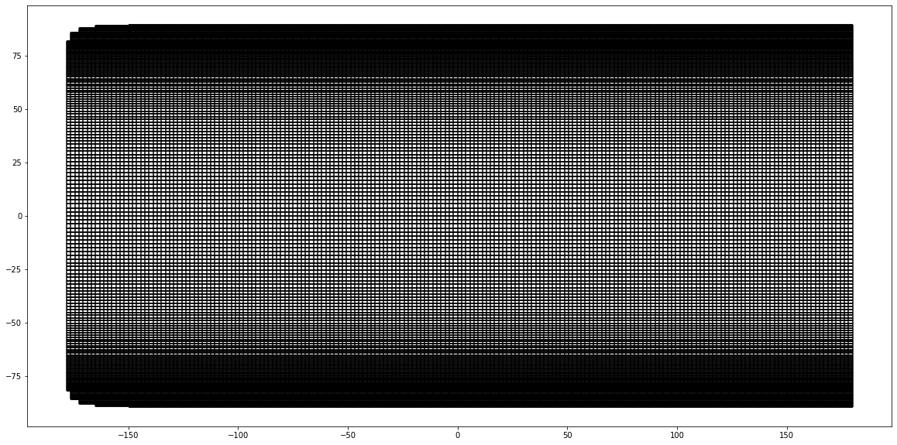

Generating a global grid
This tutorial will demonstrate the generation of a global grid in spherical coordinates
import meshkernel
import matplotlib.pyplot as plt
mk = meshkernel.MeshKernel(projection=meshkernel.ProjectionType.SPHERICAL)
mk.mesh2d_make_global(num_longitude_nodes=192, num_latitude_nodes=100)
mesh2d = mk.mesh2d_get()
Plot the result
plt.close("all")
figsize = (20, 10)
mesh2d = mk.mesh2d_get()
fig, ax = plt.subplots(figsize=figsize)
mesh2d.plot_edges(ax, color="k")
